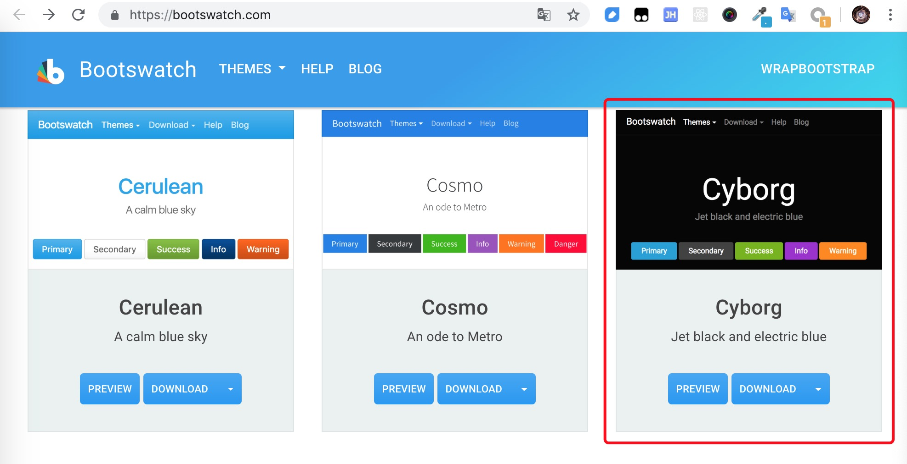

摘要： 体验神奇的GraphQL!
Fundebug经授权转载，版权归原作者所有。
一种用于API调用的数据查询语言
传统的api调用一般获取到的是后端组装好的一个完整对象，而前端可能只需要用其中的某些字段，大部分数据的查询和传输工作都浪费了。graphQL提供一种全新数据查询方式，可以只获取需要的数据，使api调用更灵活、高效和低成本。
下面我们通过搭建一个SpaceX的新闻网站来直观学习graphQL的基本使用方法，所有数据由 官方API 获得。
服务端采用node + express。新建一个node项目，安装如下依赖：
$ npm i graphql express-graphql express axios创建入口文件 server.js，里面创建express服务。使用graphQL我们只需要设置一个路由，所有的请求都由这个graphQL的request handler处理：
const express = require("express");
const graphqlHTTP = require("express-graphql");
const schema = require("./schema");
const app = express();
app.use(
"/graphql",
graphqlHTTP({
schema,
graphiql: true
})
);
const PORT = process.env.PORT || 5000;
app.listen(PORT, () => console.log(`Server started on port ${PORT}`));graphqlHTTP是grapql的http服务，用于处理graphql的查询请求，它接收一个options参数，其中schema是一个 GraphQLSchema实例，我们接下来定义，graphiql设置为true可以在浏览器中直接对graphQL进行调试。更多express-graphql的用法请参考 Github express-graphql。
接下来我们定义schema，schema意为‘模式’，其中定义了数据模型的结构、字段的类型、模型间的关系，是graphQL的核心。
新建schema.js文件，首先定义两个数据模型：LaunchType（发射）和 RocketType（火箭）。注意字段的数据类型需要使用GraphQL定义的，不能使用js中的基本数据类型。
const {
GraphQLObjectType,
GraphQLInt,
GraphQLString,
GraphQLBoolean,
GraphQLList,
GraphQLSchema
} = require("graphql");
const LaunchType = new GraphQLObjectType({
name: "Launch",
fields: () => ({
flight_number: { type: GraphQLInt },
mission_name: { type: GraphQLString },
launch_date_local: { type: GraphQLString },
launch_success: { type: GraphQLBoolean },
rocket: { type: RocketType }
})
});
const LaunchType = new GraphQLObjectType({
name: "Rocket",
fields: () => ({
rocket_id: { type: GraphQLString },
rocket_name: { type: GraphQLString },
rocket_type: { type: GraphQLString }
})
});有了数据模型之后，我们需要从数据库或者第三方API获取数据，在此我们从spacex的官方API获取。我们需要定义一个root query，root query做为所有查询的入口，处理并返回数据，更多请参考 GraphQL Root fields & resolvers。
在 schema.js中增加代码：
const axios = require("axios");
const RootQuery = new GraphQLObjectType({
name: "RootQueryType",
fields: {
launches: {
type: new GraphQLList(LaunchType),
resolve(parent, args) {
return axios
.get("https://api.spacexdata.com/v3/launches")
.then(res => res.data);
}
}
}
});
module.exports = new GraphQLSchema({
query: RootQuery
});完成这一步，服务端api基本搭建完成！我们看一下效果，在浏览器中输入 http://localhost:5000/graphql 将打开 Graphiql（生产环境建议禁用）：
我们可以只查询所有的 flight_number：
或者更多的属性：
是不是很简单很神奇！
我们也可以通过传入参数查询单条信息：
const RootQuery = new GraphQLObjectType({
name: "RootQueryType",
fields: {
launch: {
type: LaunchType,
args: {
flight_number: { type: GraphQLInt }
},
resolve(parent, args) {
return axios
.get(
`https://api.spacexdata.com/v3/launches/${
args.flight_number
}`
)
.then(res => res.data);
}
}
}
});结果：
推荐大家使用Fundebug，一款很好用的BUG监控工具~
刚刚我们都是用GraphiQL在浏览器调用接口，接下来我们看一下在前端页面中怎么调用graphql服务。前端我们使用react。
在项目根目录初始化react项目：
$ npx create-react-app client为了便于调试，在package.json中增加scripts：
"start": "node server.js",
"server": "nodemon server.js",
"client": "npm start --prefix client",
"dev":"concurrently \"npm run server\" \"npm run client\" "样式我们使用bootswatch中的一款主题：

GraphQL的客户端有多种实现，本次项目使用 Apollo，最流行的GraphQL Client。更多client请参考 GraphQL Clients。
安装如下依赖：
$ cd client
$ npm i apollo-boost react-apollo graphql其中 apollo-boost 是apollo client本身，react-apollo 是react视图层的集成，graphql 用于解析graphql的查询语句。
修改App.js内容如下：
import React, { Component } from "react";
import ApolloClient from "apollo-boost";
import { ApolloProvider } from "react-apollo";
import "./theme.css";
import "./App.css";
import logo from "./spacex-logo-light.png";
const client = new ApolloClient({
uri: "http://localhost:5000/graphql"
});
class App extends Component {
render() {
return (
<ApolloProvider client={client}>
<div className="container">
<img src={logo} id="logo" />
</div>
</ApolloProvider>
);
}
}
export default App;和redux使用<Provider>传递store类似，react-apollo 通过 <ApolloProvider>将apollo client向下传递。
接着我们来实现显示launches的component，新增文件 components/Launches.js：
import React, { Component, Fragment } from "react";
import gql from "graphql-tag";
import { Query } from "react-apollo";
import LaunchItem from "./LaunchItem";
const LAUNCHES_QUERY = gql`
query LaunchesQuery {
launches {
flight_number
mission_name
launch_date_local
launch_success
}
}
`;
export class Launches extends Component {
render() {
return (
<Fragment>
<h1 className="display-4 my-3">Launches</h1>
<Query query={LAUNCHES_QUERY}>
{({ loading, error, data }) => {
if (loading) return <h4>Loading...</h4>;
if (error) console.log(error);
return (
<Fragment>
{data.launches.map(launch => (
<LaunchItem
key={launch.flight_number}
launch={launch}
/>
))}
</Fragment>
);
}}
</Query>
</Fragment>
);
}
}
export default Launches;query语句通过 graphql-tag 定义，传入 <Query> 执行获取数据并传入 LaunchItem 显示。
components/LaunchItem.js:
import React from "react";
export default function LaunchItem({
launch: { flight_number, mission_name, launch_date_local, launch_success }
}) {
return (
<div className="card card-body mb-3">
<div className="col-md-9">
<h4>Mission: {mission_name}</h4>
<p>Date: {launch_date_local}</p>
</div>
<div className="col-md-3">
<button className="btn btn-secondary">Launch Details</button>
</div>
</div>
);
}查询语句通过graphql-tag定义，然后传入<Query>执行。
由于本地调试，client和server分别运行在不同的端口，所以需要先进行跨域处理，使用 cors。
// server.js
const cors = require('cors');
app.use(cors());好了，大功告成，我们来看一下效果：
今天就主要介绍GraphQL工程的搭建和GraphQL Query的使用，更多关于GraphQL的内容比如 Mutation下次有空会跟大家逐步讲解。
本文灵感来源：Youtube@Traversy Media，感谢
本文Demo Github地址：Github@MudOnTire
本文Demo线上展示：Heroku@graphql-spacex-launches
最后，推荐大家使用Fundebug，一款很好用的BUG监控工具~
Fundebug专注于JavaScript、微信小程序、微信小游戏、支付宝小程序、React Native、Node.js和Java线上应用实时BUG监控。 自从2016年双十一正式上线，Fundebug累计处理了10亿+错误事件，付费客户有阳光保险、核桃编程、荔枝FM、掌门1对1、微脉、青团社等众多品牌企业。欢迎大家免费试用！